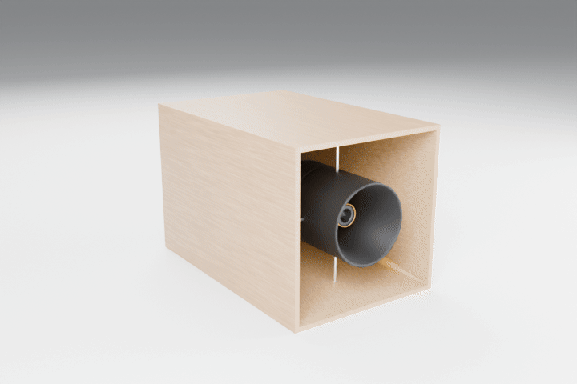

Sunflower
A three-way coaxial horn loudspeaker where each horn's phase plug is the next horn. A reversed 15 inch driver drives a flat-panel horn. A 6 inch midrange horn sits in its mouth and forms the low horn's centre body. A Fostex T925A bullet tweeter sits in the throat of the mid horn as its phase plug. All three sections radiate from one axis and one mouth plane.

Status. Every number here is from simulation: plane-wave horn models coupled to Thiele/Small driver models, checked with axisymmetric FEM, and the tweeter's published response. Every horn size came out of an optimisation with explicit size limits (see Design). Nothing has been built or measured yet.

Three horns on one axis
Low, up to 400 Hz
18Sound 15W500, mounted backwards so its motor points into the horn. The motor and a printed nose are the throat's phase plug. Its cone works into a 35 litre sealed chamber. The horn is four flat birch-ply panels and four corner fillers: 360 mm octagon to 600 mm square over 850 mm.
Mid, 400 Hz to 6.0 kHz
PRV 6MR600X-NDY (6 inch) into an exponential horn, 290 mm mouth, 260 mm long, through an annular throat around the tweeter. It sits in a 302 mm printed can on four aluminium rods. To the low horn, the can is the centre body.
Tweeter, 6.0 kHz up
Fostex T925A: a ring-diaphragm horn tweeter with a bullet phase plug in its own mouth, 82 mm across. Its body, in a 2 mm printed sleeve, fills the middle of the mid horn throat, so the mid's sound leaves through the annulus around it.


Specification
| Value | Notes | |
|---|---|---|
| Type | Three-way coaxial horn, active | 3-way DSP crossover and three amplifier channels |
| Sensitivity | 104.4 dB | 2.83 V, 1 m, set by the quietest section |
| Frequency response | 69 Hz to 16 kHz | -3 dB on axis after DSP; -6 dB at 65 Hz |
| Crossovers | 400 Hz and 6.0 kHz | Linkwitz-Riley 24 dB/oct |
| Drivers | 18Sound 15W500, PRV 6MR600X-NDY, Fostex T925A | All 8 ohm |
| Cabinet | 636 x 636 x 982 mm | 18 mm birch ply, 25 mm baffle |
| Low horn | 360 mm octagon to 600 mm square, 850 mm | Flat panels, 8.0 degree flare |
| Mid horn | Exponential, 124 to 290 mm, 260 mm | Annular throat, 2.2:1 compression |
